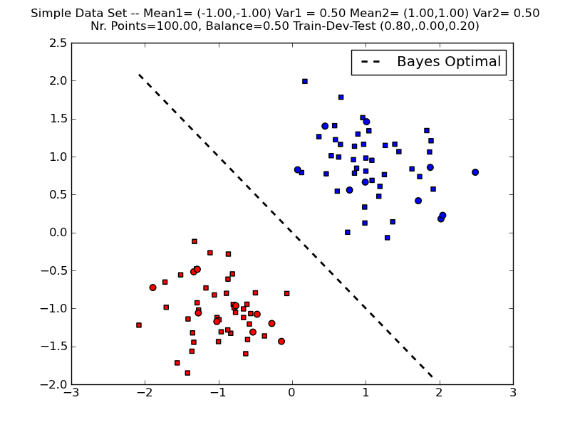

Linear Classifiers Day 1
This day will serve as an introduction to machine learning. We will recall some fundamental concepts about decision theory and classification, present some widely used models and algorithms and try to provide the main motivation behind them. There are several textbooks that provide a thorough description of some of the concepts introduced here: for example, Mitchell (1997), Duda, Hart, and Stork (2001), Schölkopf and Smola (2002), Joachims (2002), Bishop (2006), Manning, Raghavan, and Schütze (2008), to name just a few. The concepts that we introduce in this chapter will be revisited in later chapters and expanded to account for non-linear models and structured inputs and outputs. For now, we will concern ourselves only with multi-class classification (with just a few classes) and linear classifiers.
Although modern NLP has largely shifted towards deep learning and Transformer-based models for classification tasks, the methods introduced here remain important foundations. They are still widely used in resource-constrained settings, as baselines, and as components in larger systems. Understanding them also provides the conceptual groundwork for understanding neural classifiers.
Today’s assignment
The assignment of today’s class is to implement a classifier called Naïve Bayes, and use it to perform sentiment analysis on a corpus of book reviews from Amazon.
Notation
In what follows, we denote by \(\mathcal{X}\) our input set (also called observation set) and by \(\mathcal{Y}\) our output set. We will make no assumptions about the set \(\mathcal{X}\), which can be continuous or discrete. In this lecture, we consider classification problems, where \(\mathcal{Y} = \{c_1,\ldots,c_K\}\) is a finite set, consisting of \(K\) classes (also called labels). For example, \(\mathcal{X}\) can be a set of documents in natural language, and \(\mathcal{Y}\) a set of topics, the goal being to assign a topic to each document.
We use upper-case letters for denoting random variables, and lower-case letters for value assignments to those variables: for example,
\(X\) is a random variable taking values on \(\mathcal{X}\),
\(Y\) is a random variable taking values on \(\mathcal{Y}\),
\(x \in \mathcal{X}\) and \(y \in \mathcal{Y}\) are particular values for \(X\) and \(Y\).
We consider events such as \(X=x\), \(Y=y\), etc.
For simplicity reasons, throughout this lecture we will use modified notation and let \(P(y)\) denote the probability associated with the event \(Y=y\) (instead of \(P_Y(Y=y)\)). Also, joint and conditional probabilities are denoted as \(P(x,y) \triangleq P_{X,Y}(X=x \wedge Y=y)\) and \(P(x|y) \triangleq P_{X|Y}(X=x \,\,|\,\,Y=y)\), respectively. From the laws of probabilities: \[P(x,y)=P(y|x) P(x) = P(x|y) P(y),\] for all \(x \in \mathcal{X}\) and \(y \in \mathcal{Y}\).
Quantities that are predicted or estimated from the data will be appended a hat-symbol: for example, estimations of the probabilities above are denoted as \({\hat P}(y)\), \({\hat P}(x,y)\) and \({\hat P}(y|x)\); and a prediction of an output will be denoted \({\hat y}\).
We assume that a training dataset \(\mathcal{D}\) is provided which consists of \(M\) input-output pairs (called examples or instances): \[\mathcal{D} = \{(x^{1},y^{1}),\ldots,(x^{M},y^{M})\} \subseteq \mathcal{X} \times \mathcal{Y}.\]
The goal of (supervised) machine learning is to use the training dataset \(\mathcal{D}\) to learn a function \(h\) (called a classifier) that maps from \(\mathcal{X}\) to \(\mathcal{Y}\): this way, given a new instance \(x \in \mathcal{X}\) (test example), the machine makes a prediction \({\hat y}\) by evaluating \(h\) on \(x\), i.e., \({\hat y} = h(x)\).
Generative Classifiers: Naïve Bayes
If we knew the true distribution \(P(X,Y)\), the best possible classifier (called Bayes optimal) would be one which predicts according to
\[\begin{aligned} {\hat y} &=& \arg\max_{y \in \mathcal{Y}} P(y|x) \nonumber\\ &=& \arg\max_{y \in \mathcal{Y}} \frac{P(x,y)}{P(x)} \nonumber \\ &=^{\dagger}& \arg\max_{y \in \mathcal{Y}} P(x,y) \nonumber \\ &=& \arg\max_{y \in \mathcal{Y}} P(y) P(x|y),\end{aligned}\] where in \({\dagger}\) we used the fact that \(P(x)\) is constant with respect to \(y\).
Generative classifiers try to estimate the probability distributions \(P(Y)\) and \(P(X|Y)\), which are respectively called the class prior and the class conditionals. They assume that the data are generated according to the following generative story (independently for each \(m=1,\ldots,M\)):
A class \(y_m \sim P(Y)\) is drawn from the class prior distribution;
An input \(x_m \sim P(X|Y=y_m)\) is drawn from the corresponding class conditional.
Figure 1 shows an example of the Bayes optimal decision boundary for a toy example with \(K=2\) classes, \(M=100\) points, class priors \(P(y_1) = P(y_2) = 0.5\), and class conditionals \(P(x|y_i)\) given by 2-D Gaussian distributions with the same variance but different means.

Training and Inference
Training a generative model amounts to estimating the probabilities \(P(Y)\) and \(P(X|Y)\) using the dataset \(\mathcal{D}\), yielding estimates \(\hat{P}(y)\) and \(\hat{P}(x|y)\). This estimation is usually called training or learning.
After we are done training, we are given a new input \(x \in \mathcal{X}\), and we want to make a prediction according to \[\begin{aligned} {\hat y} &=& \arg\max_{y \in \mathcal{Y}} \hat{P}(y) \hat{P}(x|y), \label{eq:argmax}\end{aligned}\] using the estimated probabilities. This is usually called inference or decoding.
We are left with two important problems:
How should the distributions \({\hat P}(Y)\) and \({\hat P}(X|Y)\) be “defined”? (i.e., what kind of independence assumptions should they state, or how should they factor?)
How should parameters be estimated from the training data \(\mathcal{D}\)?
The first problem strongly depends on the application at hand. Quite often, there is a natural decomposition of the input variable \(X\) into \(J\) components, \[X = (X_1,\ldots,X_J).\]
The naïve Bayes method makes the following assumption: \(X_1,\ldots,X_J\) are conditionally independent given the class. Mathematically, this means that \[\begin{aligned} P(X|Y) &=& \prod_{j=1}^J P(X_j|Y).\end{aligned}\] Note that this independence assumption greatly reduces the number of parameters to be estimated (degrees of freedom) from \(O(\exp(J))\) to \(O(J)\), hence estimation of \({\hat P}(X|Y)\) becomes much simpler, as we shall see. It also makes the overall computation much more efficient for large \(J\) and it decreases the risk of overfitting the data. On the other hand, if the assumption is over-simplistic it may increase the risk of under-fitting.
For the second problem, one of the simplest ways to solve it is using maximum likelihood estimation, which aims to maximize the probability of the training sample, assuming that each point was generated independently. This probability (call it \(P(\mathcal{D})\)) factorizes as \[\begin{aligned} P(\mathcal{D}) &=& \prod_{m=1}^M P(x^m,y^m) \nonumber\\ &=& \prod_{m=1}^M P(y^m)\prod_{j=1}^J P(x^m_j|y^m). \end{aligned}\]
Example: Multinomial Naïve Bayes for Document Classification
We now consider a more realistic scenario where the naïve Bayes classifier may be applied. Suppose that the task is document classification: \(\mathcal{X}\) is the set of all possible documents, and \(\mathcal{Y}=\{y_1,\ldots,y_K\}\) is a set of classes for those documents. Let \(\mathcal{V} = \{w_1,\ldots,w_J\}\) be the vocabulary, i.e., the set of words that occur in some document.
A very popular document representation is through a “bag-of-words”: each document is seen as a collection of words along with their frequencies; word ordering is ignored. We are going to see that this is equivalent to a naïve Bayes assumption with the multinomial model. We associate to each class a multinomial distribution, which ignores word ordering, but takes into consideration the frequency with which each word appears in a document. For simplicity, we assume that all documents have the same length \(L\). 1 Each document \(x\) is assumed to have been generated as follows. First, a class \(y\) is generated according to \(P(y)\). Then, \(x\) is generated by sequentially picking words from \(\mathcal{V}\) with replacement. Each word \(w_j\) is picked with probability \(P(w_j|y)\). For example, the probability of generating a document \(x = w_{j_1}\ldots w_{j_L}\) (i.e., a sequence of \(L\) words \(w_{j_1},\ldots,w_{j_L}\)) is \[\begin{aligned} P(x|y) = \prod_{l=1}^L P(w_{j_l}|y) = \prod_{j=1}^J P(w_j|y)^{n_j(x)},\end{aligned}\] where \(n_j(x)\) is the number of occurrences of word \(w_j\) in document \(x\).
Hence, the assumption is that word occurrences (tokens) are independent given the class. The parameters that need to be estimated are \({\hat P}(y_1),\ldots,{\hat P}(y_K)\), and \({\hat P}(w_j|y_k)\) for \(j=1,\ldots,J\) and \(k=1,\ldots,K\). Given a training sample \(\mathcal{D} = \{(x^{1},y^{1}),\ldots,(x^{M},y^{M})\}\), denote by \(\mathcal{I}_k\) the indices of those instances belonging to the \(k\)th class. The maximum likelihood estimates of the quantities above are: \[\begin{aligned} \label{eq:mlemultinomial} {\hat P}(y_k) = \frac{|\mathcal{I}_k|}{M}, \qquad {\hat P}(w_j|y_k) = \frac{\sum_ {m \in \mathcal{I}_k} n_j(x^m)}{\sum_{i=1}^J \sum_ {m\in \mathcal{I}_k} n_i(x^m)}.\end{aligned}\] In words: the class priors’ estimates are their relative frequencies (as before), and the class-conditional word probabilities are the relative frequencies of those words across documents with that class.
Assignment
With the previous theoretical background, you will be able to solve today’s assignment.
In this exercise we will use the Amazon sentiment analysis data (Blitzer, Dredze, and Pereira 2007), where the goal is to classify text documents as expressing a positive or negative sentiment (i.e., a classification problem with two classes). We are going to focus on book reviews. To load the data, type:
import lxmls.readers.sentiment_reader as srs
scr = srs.SentimentCorpus("books")This will load the data in a bag-of-words representation where rare words (occurring less than \(5\) times in the training data) are removed.
Implement the Naïve Bayes algorithm. Open the file
multinomial_naive_bayes.py, which is inside theclassifiersfolder. In theMultinomialNaiveBayesclass you will find thetrainmethod. We have already placed some code in that file to help you get started.After implementing, run Naïve Bayes with the multinomial model on the Amazon dataset (sentiment classification) and report results both for training and testing:
import lxmls.classifiers.multinomial_naive_bayes as mnbb mnb = mnbb.MultinomialNaiveBayes() params_nb_sc = mnb.train(scr.train_X,scr.train_y) y_pred_train = mnb.test(scr.train_X,params_nb_sc) acc_train = mnb.evaluate(scr.train_y, y_pred_train) y_pred_test = mnb.test(scr.test_X,params_nb_sc) acc_test = mnb.evaluate(scr.test_y, y_pred_test) print("Multinomial Naive Bayes Amazon Sentiment Accuracy train: %f test: %f"%(acc_train,acc_test))Observe that words that were not observed at training time cause problems at test time. Why? To solve this problem, apply a simple add-one smoothing technique: replace the expression in Eq. [eq:mlemultinomial] for the estimation of the conditional probabilities by \[{\hat P}(w_j|c_k) = \frac{1+\sum_ {m \in \mathcal{I}_k} n_j(x^m)}{J + \sum_{i=1}^J \sum_ {m\in \mathcal{I}_k} n_i(x^m)}.\]
where \(J\) is the number of distinct words.
This is a widely used smoothing strategy which has a Bayesian interpretation: it corresponds to choosing a uniform prior for the word distribution on both classes, and to replace the maximum likelihood criterion by a maximum a posteriori approach. This is a form of regularization, preventing the model from overfitting on the training data. See e.g. Manning and Schütze (1999; Manning, Raghavan, and Schütze 2008) for more information. Report the new accuracies.
Discriminative Classifiers
In the previous sections we discussed generative classifiers, which require us to model the class prior and class conditional distributions (\(P(Y)\) and \(P(X|Y)\), respectively). Recall, however, that a classifier is any function which maps objects \(x \in \mathcal{X}\) onto classes \(y \in \mathcal{Y}\). While it’s often useful to model how the data was generated, it’s not required. Classifiers that do not model these distributions are called discriminative classifiers.
Features
For the purpose of understanding discriminative classifiers, it is useful to think about each \(x \in \mathcal{X}\) as an abstract object which is subject to a set of descriptions or measurements, which are called features. A feature is simply a real number that describes the value of some property of \(x\). For example, in the previous section, the features of a document were the number of times each word \(w_j\) appeared in it.
Let \(g_1(x),\ldots,g_J(x)\) be \(J\) features of \(x\). We call the vector \[\boldsymbol{g}(x) = (g_1(x),\ldots,g_J(x))\] a feature vector representation of \(x\). The map \(\boldsymbol{g}:\mathcal{X}\rightarrow \mathbb{R}^J\) is called a feature mapping.
In NLP applications, features are often binary-valued and result from evaluating propositions such as: \[\begin{aligned} g_1(x) &\triangleq& \left\{ \begin{array}{ll} 1, & \text{if sentence $x$ contains the word \emph{Ronaldo}}\\ 0, & \text{otherwise.} \end{array} \right.\\ g_2(x) &\triangleq& \left\{ \begin{array}{ll} 1, & \text{if all words in sentence $x$ are capitalized}\\ 0, & \text{otherwise.} \end{array} \right.\\ g_3(x) &\triangleq& \left\{ \begin{array}{ll} 1, & \text{if $x$ contains any of the words \emph{amazing}, \emph{excellent} or \emph{:-)}}\\ 0, & \text{otherwise.} \end{array} \right.\end{aligned}\] In this example, the feature vector representation of the sentence "Ronaldo shoots and scores an amazing goal!" would be \(\boldsymbol{g}(x) = (1,0,1)\).
In multi-class learning problems, rather than associating features only with the input objects, it is useful to consider joint feature mappings \(\boldsymbol{f}:\mathcal{X}\times \mathcal{Y}\rightarrow \mathbb{R}^D\). In that case, the joint feature vector \(\boldsymbol{f}(x,y)\) can be seen as a collection of joint input-output measurements. For example: \[\begin{aligned} f_1(x,y) &\triangleq& \left\{ \begin{array}{ll} 1, & \text{if $x$ contains \emph{Ronaldo}, and topic $y$ is {\tt sport}}\\ 0, & \text{otherwise.} \end{array} \right.\\ f_2(x,y) &\triangleq& \left\{ \begin{array}{ll} 1, & \text{if $x$ contains \emph{Ronaldo}, and topic $y$ is {\tt politics}}\\ 0, & \text{otherwise.} \end{array} \right.\end{aligned}\] A very simple form of defining a joint feature mapping which is often employed is via: \[\begin{aligned} \label{eq:jointfeatsimple} \boldsymbol{f}(x,y) &\triangleq& \boldsymbol{g}(x) \otimes \boldsymbol{e}_y\nonumber\\ &=& (0,\ldots,0,\underbrace{\boldsymbol{g}(x)}_{\text{$y$th slot}},0,\ldots,0)\end{aligned}\] where \(\boldsymbol{g}(x) \in \mathbb{R}^J\) is a input feature vector, \(\otimes\) is the Kronecker product (\([\boldsymbol{a} \otimes \boldsymbol{b}]_{ij} = a_i b_j\)) and \(\boldsymbol{e}_y \in \mathbb{R}^{K}\), with \([\boldsymbol{e}_y]_c = 1\) iff \(y=c\), and \(0\) otherwise. Hence \(\boldsymbol{f}(x,y) \in \mathbb{R}^{J \times K}\).
Inference
Linear classifiers are very popular in natural language processing applications. They make their decision based on the rule: \[{\hat y} = \arg\max_{y \in \mathcal{Y}} \boldsymbol{w} \cdot \boldsymbol{f}(x,y).\] where
\(\boldsymbol{w} \in \mathbb{R}^D\) is a weight vector;
\(\boldsymbol{f}(x,y) \in \mathbb{R}^D\) is a feature vector;
\(\boldsymbol{w} \cdot \boldsymbol{f}(x,y) = \sum_{d=1}^D w_d f_d(x,y)\) is the inner product between \(\boldsymbol{w}\) and \(\boldsymbol{f}(x,y)\).
Hence, each feature \(f_d(x,y)\) has a weight \(w_d\) and, for each class \(y \in \mathcal{Y}\), a score is computed by linearly combining all the weighted features. All these scores are compared, and a prediction is made by choosing the class with the largest score.
With the design above (Eq. [eq:jointfeatsimple]), and decomposing the weight vector as \(\boldsymbol{w} = (\boldsymbol{w}_{c_1},\ldots,\boldsymbol{w}_{c_K})\), we have that \[\boldsymbol{w} \cdot \boldsymbol{f}(x,y) = \boldsymbol{w}_y \cdot \boldsymbol{g}(x).\] In words: each class \(y \in \mathcal{Y}\) gets its own weight vector \(\boldsymbol{w}_y\), and one defines a input feature vector \(\boldsymbol{g}(x)\) that only looks at the input \(x \in \mathcal{X}\). This representation is very useful when features only depend on input \(x\) since it allows a more compact representation. Note that the number of features is normally very large.
The multinomial naïve Bayes classifier described in the previous section is an instance of a linear classifier. Recall that the naïve Bayes classifier predicts according to \({\hat y} = \arg\max_{y \in \mathcal{Y}} \hat{P}(y) \hat{P}(x|y)\). Taking logs, in the multinomial model for document classification this is equivalent to: \[\begin{aligned} {\hat y} &=& \arg\max_{y \in \mathcal{Y}} \log \hat{P}(y) + \log \hat{P}(x|y) \nonumber\\ &=& \arg\max_{y \in \mathcal{Y}} \log \hat{P}(y) + \sum_{j=1}^J n_j(x) \log \hat{P}(w_{j}|y)\nonumber\\ &=& \arg\max_{y \in \mathcal{Y}} \boldsymbol{w}_y \cdot \boldsymbol{g}(x), \end{aligned}\] where \[\begin{aligned} \boldsymbol{w}_y &=& \left(b_y, \log \hat{P}(w_1 | y),\ldots, \log \hat{P}(w_J | y)\right) \nonumber\\ b_y &=& \log \hat{P}(y)\nonumber\\ \boldsymbol{g}(x) &=& (1, n_1(x), \ldots, n_J(x)).\end{aligned}\] Hence, the multinomial model yields a prediction rule of the form \[\begin{aligned} {\hat y} &=& \arg\max_{y \in \mathcal{Y}} \boldsymbol{w}_y \cdot \boldsymbol{g}(x). \end{aligned}\]
Online Discriminative Algorithms
We now discuss two discriminative classification algorithms. These two algorithms are called online (or stochastic) algorithms because they only process one data point (in our example, one document) at a time. Algorithms which look at the whole dataset at once are called offline, or batch algorithms, and will be discussed later.
Perceptron
The perceptron (Rosenblatt 1958) is perhaps the oldest algorithm used to train a linear classifier. The perceptron works as follows: at each round, it takes an element \(x\) from the dataset, and uses the current model to make a prediction. If the prediction is correct, nothing happens. Otherwise, the model is corrected by adding the feature vector w.r.t. the correct output and subtracting the feature vector w.r.t. the predicted (wrong) output. Then, it proceeds to the next round.
Alg. [alg:perceptron] shows the pseudo-code of the perceptron algorithm. As it can be seen, it is remarkably simple; yet it often reaches a very good performance, often better than the Naïve Bayes, and usually not much worse than maximum entropy models or SVMs (which will be described in the following section). 2
A weight vector \(\boldsymbol{w}\) defines a separating hyperplane if it classifies all the training data correctly, i.e., if \(y^m = \argmax_{y \in \mathcal{Y}} \boldsymbol{w} \cdot \boldsymbol{f}(x^m,y)\) hold for \(m = 1,\ldots,M\). A dataset \(\mathcal{D}\) is separable if such a weight vector exists (in general, \(\boldsymbol{w}\) is not unique). A very important property of the perceptron algorithm is the following: if \(\mathcal{D}\) is separable, then the number of mistakes made by the perceptron algorithm until it finds a separating hyperplane is finite. This means that if the data are separable, the perceptron will eventually find a separating hyperplane \(\boldsymbol{w}\).
There are other variants of the perceptron (e.g., with regularization) which we omit for brevity.
We provide an implementation of the perceptron algorithm in the class
Perceptron (file
perceptron.py).
Run the following commands to generate a simple dataset similar to the one plotted on Figure 1:
import lxmls.readers.simple_data_set as sds sd = sds.SimpleDataSet(nr_examples=100, g1 = [[-1,-1],1], g2 = [[1,1],1], balance=0.5, split=[0.5,0,0.5])Run the perceptron algorithm on the simple dataset previously generated and report its train and test set accuracy:
import lxmls.classifiers.perceptron as percc perc = percc.Perceptron() params_perc_sd = perc.train(sd.train_X,sd.train_y) y_pred_train = perc.test(sd.train_X,params_perc_sd) acc_train = perc.evaluate(sd.train_y, y_pred_train) y_pred_test = perc.test(sd.test_X,params_perc_sd) acc_test = perc.evaluate(sd.test_y, y_pred_test) print("Perceptron Simple Dataset Accuracy train: %f test: %f"%(acc_train,acc_test))Plot the decision boundary found:
fig,axis = sd.plot_data() fig,axis = sd.add_line(fig,axis,params_perc_sd,"Perceptron","blue")Change the code to save the intermediate weight vectors, and plot the decision boundaries every five iterations. What do you observe?
Run the perceptron algorithm on the Amazon dataset.
Margin Infused Relaxed Algorithm (MIRA)
The MIRA algorithm (Crammer and Singer 2002; Crammer et al. 2006) has achieved very good performance in NLP problems. Recall that the Perceptron takes an input pattern and, if its prediction is wrong, adds the quantity \([\boldsymbol{f}(x^m,y^m) - \boldsymbol{f}(x^m,\hat{y})]\) to the weight vector. MIRA changes this by adding \(\eta^t[\boldsymbol{f}(x^m,y^m) - \boldsymbol{f}(x^m,\hat{y})]\) to the weight vector. The difference is the step size \(\eta^t\), which depends on the iteration \(t\).
There is a theoretical basis for this algorithm, which we now briefly explain. At each round \(t\), MIRA updates the weight vector by solving the following optimization problem:
\[\begin{aligned} \label{eq:miraupdates} \boldsymbol{w}^{t+1} \leftarrow \argmin_{\boldsymbol{w}, \xi} & \xi + \frac{\lambda}{2} \|\boldsymbol{w} - \boldsymbol{w}^t\|^2 \\ \text{s.t.} & \boldsymbol{w} \cdot \boldsymbol{f}(x^m,y^m) \ge \boldsymbol{w} \cdot\boldsymbol{f}(x^m,\hat{y}) + 1 - \xi\\ & \xi \ge 0,\end{aligned}\] where \(\hat{y}=\argmax_{y'\in\mathcal{Y}} \boldsymbol{w}^t \cdot \boldsymbol{f}(x^m,y')\) is the prediction using the model with weight vector \(\boldsymbol{w}^t\). By inspecting Eq. [eq:miraupdates] we see that MIRA attempts to achieve a tradeoff between conservativeness (penalizing large changes from the previous weight vector via the term \(\frac{\lambda}{2} \|\boldsymbol{w} - \boldsymbol{w}^t\|^2\)) and correctness (by requiring, through the constraints, that the new model \(\boldsymbol{w}^{t+1}\) “separates” the true output from the prediction with a margin (although slack \(\xi \ge 0\) is allowed). 3 Note that, if the prediction is correct (\(\hat{y}=y^m\)) the solution of the problem Eq. [eq:miraupdates] leaves the weight vector unchanged (\(\boldsymbol{w}^{t+1}=\boldsymbol{w}^t\)). This quadratic programming problem has a closed form solution: 4 \[\boldsymbol{w}^{t+1} \leftarrow \boldsymbol{w}^{t} + \eta^t (\boldsymbol{f}(x^m,y^m) - \boldsymbol{f}(x^m,\hat{y})),\] with \[\eta^t = \min\left\{\lambda^{-1}, \frac{\boldsymbol{w}^t \cdot \boldsymbol{f}(x^m,\hat{y}) - \boldsymbol{w}^t \cdot \boldsymbol{f}(x^m,y^m) + \rho(\hat{y},y^m)}{\|\boldsymbol{f}(x^m,y^m) - \boldsymbol{f}(x^m,\hat{y})\|^2}\right\},\] where \(\rho: \mathcal{Y} \times \mathcal{Y} \rightarrow \mathbb{R}_+\) is a non-negative cost function, such that \(\rho(\hat{y},y)\) is the cost incurred by predicting \(\hat{y}\) when the true output is \(y\); we assume \(\rho(y,y) = 0\) for all \(y \in \mathcal{Y}\). For simplicity, we focus here on the \(0/1\)-cost (but keep in mind that other cost functions are possible): \[\label{eq:costfunc} \rho(\hat{y},y) = \left\{ \begin{array}{ll} 1 & \text{if $\hat{y} \ne y$}\\ 0 & \text{otherwise.} \end{array} \right.\]
MIRA is depicted in Alg. [alg:mira]. For other variants of MIRA, see Crammer et al. (2006).
We provide an implementation of the MIRA algorithm. Compare it with the perceptron for various values of \(\lambda\)
import lxmls.classifiers.mira as mirac
mira = mirac.Mira()
mira.regularizer = 1.0 # This is lambda
params_mira_sd = mira.train(sd.train_X,sd.train_y)
y_pred_train = mira.test(sd.train_X,params_mira_sd)
acc_train = mira.evaluate(sd.train_y, y_pred_train)
y_pred_test = mira.test(sd.test_X,params_mira_sd)
acc_test = mira.evaluate(sd.test_y, y_pred_test)
print("Mira Simple Dataset Accuracy train: %f test: %f"%(acc_train,acc_test))
fig,axis = sd.add_line(fig,axis,params_mira_sd,"Mira","green")
params_mira_sc = mira.train(scr.train_X,scr.train_y)
y_pred_train = mira.test(scr.train_X,params_mira_sc)
acc_train = mira.evaluate(scr.train_y, y_pred_train)
y_pred_test = mira.test(scr.test_X,params_mira_sc)
acc_test = mira.evaluate(scr.test_y, y_pred_test)
print("Mira Amazon Sentiment Accuracy train: %f test: %f"%(acc_train,acc_test))Compare the results achieved and separating hyperplanes found.
Batch Discriminative Classifiers
As we have mentioned, the perceptron and MIRA algorithms are called online or stochastic because they look at one data point at a time. We now describe two discriminative classifiers which look at all points at once; these are called offline or batch algorithms.
Maximum Entropy Classifiers
The notion of entropy in the context of Information Theory (Shannon 1948) is one of the most significant advances in mathematics in the twentieth century. The principle of maximum entropy (which appears under different names, such as “maximum mutual information” or “minimum Kullback-Leibler divergence”) plays a fundamental role in many methods in statistics and machine learning (Jaynes 1982). 5 The basic rationale is that choosing the model with the highest entropy (subject to constraints that depend on the observed data) corresponds to making the fewest possible assumptions regarding what was unobserved, making uncertainty about the model as large as possible.
For example, if we throw a die and want to estimate the probability of its outcomes, the distribution with the highest entropy would be the uniform distribution (each outcome having of probability a \(1/6\)). Now suppose that we are only told that outcomes \(\{1,2,3\}\) occurred \(10\) times in total, and \(\{4,5,6\}\) occurred \(30\) times in total, then the principle of maximum entropy would lead us to estimate \(P(1)=P(2)=P(3)=1/12\) and \(P(4)=P(5)=P(6)=1/4\) (i.e., outcomes would be uniform within each of the two groups).6
This example could be presented in a more formal way. Suppose that we want to use binary features to represent the outcome of the die throw. We use two features: \(f_{123}(x,y) = 1\) if and only if \(y \in \{1,2,3\}\), and \(f_{456}(x,y) = 1\) if and only if \(y \in \{4,5,6\}\). Our observations state that in 40 throws, we observed \(f_{123}\) 10 times (25%) and \(f_{456}\) 30 times (75%). The maximum entropy principle states that we want to find the parameters \(\boldsymbol{w}\) of our model, and consequently the probability distribution \(P_{\boldsymbol{w}}(Y|X)\), which makes \(f_{123}\) have an expected value of 0.25 and \(f_{456}\) have an expected value of 0.75. These constraints, \(E[f_{123}] = 0.25\) and \(E[f_{456}] = 0.75\), are known as first moment matching constraints.7
An important fundamental result, which we will not prove here, is that the maximum entropy distribution \(P_{\boldsymbol{w}}(Y|X)\) under first moment matching constraints is a log-linear model. 8 It has the following parametric form: \[\label{eq:loglinear} P_{\boldsymbol{w}}(y|x) = \frac{\exp(\boldsymbol{w} \cdot \boldsymbol{f}(x,y))}{Z(\boldsymbol{w},x)}\] The denominator in Eq. [eq:loglinear] is called the partition function: \[Z(\boldsymbol{w},x) = \sum_{y' \in \mathcal{Y}} \exp(\boldsymbol{w} \cdot \boldsymbol{f}(x,y')).\] An important property of the partition function is that the gradient of its logarithm equals the feature expectations: \[\begin{aligned} \nabla_{\boldsymbol{w}} \log Z(\boldsymbol{w},x) &=& E_{\boldsymbol{w}} [\boldsymbol{f}(x,Y)]\nonumber\\ &=& \sum_{y' \in \mathcal{Y}} P_{\boldsymbol{w}}(y'|x) \boldsymbol{f}(x,y').\end{aligned}\]
The average conditional log-likelihood is: \[\begin{aligned} \mathcal{L}(\boldsymbol{w}; \mathcal{D}) &=& \frac{1}{M}\log P_{\boldsymbol{w}}(y^1,\ldots,y^M | x^1,\ldots,x^M) \nonumber\\ &=& \frac{1}{M}\log \prod_{m=1}^M P_{\boldsymbol{w}}(y^m | x^m)\nonumber\\ &=& \frac{1}{M}\sum_{m=1}^M \log P_{\boldsymbol{w}}(y^m | x^m)\nonumber\\ &=& \frac{1}{M}\sum_{m=1}^M \left( \boldsymbol{w} \cdot \boldsymbol{f}(x^m,y^m) - \log Z(\boldsymbol{w},x^m)\right). \end{aligned}\] We try to find the parameters \(\boldsymbol{w}\) that maximize the log-likelihood \(\mathcal{L}(\boldsymbol{w}; \mathcal{D})\); to avoid overfitting, we add a regularization term that penalizes values of \(\boldsymbol{w}\) that have a high magnitude. The optimization problem becomes: \[\begin{aligned} \label{eq:maxent} \hat{\boldsymbol{w}} &=& \argmax_{\boldsymbol{w}} \mathcal{L}(\boldsymbol{w}; \mathcal{D}) - \frac{\lambda}{2} \|\boldsymbol{w}\|^2 \nonumber\\ &=& \argmin_{\boldsymbol{w}} -\mathcal{L}(\boldsymbol{w}; \mathcal{D}) + \frac{\lambda}{2} \|\boldsymbol{w}\|^2.\end{aligned}\] Here we use the squared \(L_2\)-norm as the regularizer, 9 but other norms are possible. The scalar \(\lambda \ge 0\) controls the amount of regularization. Unlike the naïve Bayes examples, this optimization problem does not have a closed form solution in general; hence we need to resort to numerical optimization (see section [numerical_optimization]). Let \(F_{\lambda}(\boldsymbol{w}; \mathcal{D}) = -\mathcal{L}(\boldsymbol{w}; \mathcal{D}) + \frac{\lambda}{2} \|\boldsymbol{w}\|^2\) be the objective function in Eq. [eq:maxent]. This function is convex, which implies that a local optimum of Eq. [eq:maxent] is also a global optimum. \(F_{\lambda}(\boldsymbol{w}; \mathcal{D})\) is also differentiable: its gradient is \[\begin{aligned} \nabla_{\boldsymbol{w}}F_{\lambda}(\boldsymbol{w}; \mathcal{D}) &=& \frac{1}{M}\sum_{m=1}^M (-\boldsymbol{f}(x^m,y^m) + \nabla_{\boldsymbol{w}} \log Z(\boldsymbol{w},x^m)) + \lambda \boldsymbol{w} \nonumber\\ &=& \frac{1}{M}\sum_{m=1}^M (-\boldsymbol{f}(x^m,y^m) + E_{\boldsymbol{w}} [\boldsymbol{f}(x^m,Y)]) + \lambda \boldsymbol{w}. \end{aligned}\] A batch gradient method to optimize Eq. [eq:maxent] is shown in Alg. [alg:maxent_gd]. Essentially, Alg. [alg:maxent_gd] iterates through the following updates until convergence: \[\begin{aligned} \boldsymbol{w}^{t+1} &\leftarrow& \boldsymbol{w}^{t} - \eta_t \nabla_{\boldsymbol{w}}F_{\lambda}(\boldsymbol{w}^{t}; \mathcal{D})\nonumber\\ &=& (1-\lambda \eta_t) \boldsymbol{w}^{t} + \eta_t \frac{1}{M} \sum_{m=1}^M \left( \boldsymbol{f}(x^m,y^m) - E_{\boldsymbol{w}}[\boldsymbol{f}(x^m,Y)]\right).\end{aligned}\] Convergence is ensured for suitable stepsizes \(\eta_t\). Monotonic decrease of the objective value can also be ensured if \(\eta_t\) is chosen with a suitable line search method, such as Armijo’s rule (Nocedal and Wright 1999). In practice, more sophisticated methods exist for optimizing Eq. [eq:maxent], such as conjugate gradient or L-BFGS. The latter is an example of a quasi-Newton method, which only requires gradient information, but uses past gradients to try to construct second order (Hessian) approximations.
In large-scale problems (very large \(M\)) batch methods are slow. Online or stochastic optimization are attractive alternative methods. Stochastic gradient methods make “noisy” gradient updates by considering only a single instance at the time. The resulting algorithm, called Stochastic Gradient Descent (SGD) is shown as Alg. [alg:maxent_sgd]. At each round \(t\), an instance \(m(t)\) is chosen, either randomly (stochastic variant) or by cycling through the dataset (online variant). The stepsize sequence must decrease with \(t\): typically, \(\eta_t = \eta_0 t^{-\alpha}\) for some \(\eta_0 > 0\) and \(\alpha \in [1, 2]\), tuned in a development partition or with cross-validation.
We provide an implementation of the L-BFGS algorithm for training
maximum entropy models in the class
MaxEnt_batch, as well as an implementation of
the SGD algorithm in the class
MaxEnt_online.
Train a maximum entropy model using L-BFGS on the Simple data set (try different values of \(\lambda\)). Compare the results with the previous methods. Plot the decision boundary.
import lxmls.classifiers.max_ent_batch as mebc me_lbfgs = mebc.MaxEntBatch() me_lbfgs.regularizer = 1.0 params_meb_sd = me_lbfgs.train(sd.train_X,sd.train_y) y_pred_train = me_lbfgs.test(sd.train_X,params_meb_sd) acc_train = me_lbfgs.evaluate(sd.train_y, y_pred_train) y_pred_test = me_lbfgs.test(sd.test_X,params_meb_sd) acc_test = me_lbfgs.evaluate(sd.test_y, y_pred_test) print("Max-Ent batch Simple Dataset Accuracy train: %f test: %f"%(acc_train,acc_test)) fig,axis = sd.add_line(fig,axis,params_meb_sd,"Max-Ent-Batch","orange")Train a maximum entropy model using L-BFGS, on the Amazon dataset (try different values of \(\lambda\)) and report training and test set accuracy. What do you observe?
params_meb_sc = me_lbfgs.train(scr.train_X,scr.train_y) y_pred_train = me_lbfgs.test(scr.train_X,params_meb_sc) acc_train = me_lbfgs.evaluate(scr.train_y, y_pred_train) y_pred_test = me_lbfgs.test(scr.test_X,params_meb_sc) acc_test = me_lbfgs.evaluate(scr.test_y, y_pred_test) print("Max-Ent Batch Amazon Sentiment Accuracy train: %f test: %f"%(acc_train,acc_test))Now, fix \(\lambda = 1.0\) and train with SGD (you might try to adjust the initial step). Compare the objective values obtained during training with those obtained with L-BFGS. What do you observe?
import lxmls.classifiers.max_ent_online as meoc me_sgd = meoc.MaxEntOnline() me_sgd.regularizer = 1.0 params_meo_sc = me_sgd.train(scr.train_X,scr.train_y) y_pred_train = me_sgd.test(scr.train_X,params_meo_sc) acc_train = me_sgd.evaluate(scr.train_y, y_pred_train) y_pred_test = me_sgd.test(scr.test_X,params_meo_sc) acc_test = me_sgd.evaluate(scr.test_y, y_pred_test) print("Max-Ent Online Amazon Sentiment Accuracy train: %f test: %f"%(acc_train,acc_test))
Support Vector Machines
Support vector machines are also a discriminative approach, but they are not a probabilistic model at all. The basic idea is that, if the goal is to accurately predict outputs (according to some cost function), we should focus on that goal in the first place, rather than trying to estimate a probability distribution (\(P(Y|X)\) or \(P(X,Y)\)), which is a more difficult problem. As Vapnik (1995) puts it, “do not solve an estimation problem of interest by solving a more general (harder) problem as an intermediate step.”
We next describe the primal problem associated with multi-class support vector machines (Crammer and Singer 2002), which is of primary interest in natural language processing. There is a significant amount of literature about Kernel Methods (Schölkopf and Smola 2002; Shawe-Taylor and Cristianini 2004) mostly focused on the dual formulation. We will not discuss non-linear kernels or this dual formulation here. 10
Consider \(\rho(y',y)\) as a non-negative cost function, representing the cost of assigning a label \(y'\) when the correct label was \(y\). For simplicity, we focus here on the \(0/1\)-cost defined by Equation [eq:costfunc] (but keep in mind that other cost functions are possible). The hinge loss 11 is the function \[\label{eq:hingeloss} \ell(\boldsymbol{w}; x,y) = \max_{y' \in \mathcal{Y}} \left[\boldsymbol{w} \cdot \boldsymbol{f}(x,y') - \boldsymbol{w} \cdot\boldsymbol{f}(x,y) + \rho(y',y)\right].\] Note that the objective of Eq. [eq:hingeloss] becomes zero when \(y'=y\). Hence, we always have \(\ell(\boldsymbol{w}; x,y)\ge 0\). Moreover, if \(\rho\) is the \(0/1\) cost, we have \(\ell(\boldsymbol{w}; x,y)= 0\) if and only if the weight vector is such that the model makes a correct prediction with a margin greater than \(1\): i.e., \(\boldsymbol{w} \cdot \boldsymbol{f}(x,y) \ge \boldsymbol{w} \cdot\boldsymbol{f}(x,y') + 1\) for all \(y' \ne y\). Otherwise, a positive loss is incurred. The idea behind this formulation is that not only do we want to make a correct prediction, but we want to make a confident prediction; this is why we have a loss unless the prediction is correct with some margin.
Support vector machines (SVM) tackle the following optimization problem: \[\begin{aligned} \label{eq:svm} \hat{\boldsymbol{w}} &=& \argmin_{\boldsymbol{w}} \sum_{m=1}^M \ell(\boldsymbol{w}; x^m, y^m) + \frac{\lambda}{2} \|\boldsymbol{w}\|^2,\end{aligned}\] where we also use the squared \(L_2\)-norm as the regularizer. For the \(0/1\)-cost, the problem in Eq. [eq:svm] is equivalent to: \[\begin{aligned} \label{eq:svm2} \argmin_{\boldsymbol{w}, \boldsymbol{\xi}} & \sum_{m=1}^M \xi_m + \frac{\lambda}{2} \|\boldsymbol{w}\|^2 \\ \text{s.t.} & \boldsymbol{w} \cdot \boldsymbol{f}(x^m,y^m) \ge \boldsymbol{w} \cdot \boldsymbol{f}(x^m,\tilde{y}^m) + 1 - \xi_m, \quad \forall m, \tilde{y}^m \in \mathcal{Y}\setminus \{y^m\}.\end{aligned}\] Geometrically, we are trying to choose the linear classifier that yields the largest possible separation margin, while we allow some violations, penalizing the amount of slack via extra variables \(\xi_1,\ldots,\xi_m\). There is now a trade-off: increasing the slack variables \(\xi_m\) makes it easier to satisfy the constraints, but it will also increase the value of the cost function.
Problem [eq:svm] does not have a closed form solution. Moreover, unlike maximum entropy models, the objective function in [eq:svm] is non-differentiable, hence smooth optimization is not possible. However, it is still convex, which ensures that any local optimum is the global optimum. Despite not being differentiable, we can still define a subgradient of the objective function (which generalizes the concept of gradient), which enables us to apply subgradient-based methods. A stochastic subgradient algorithm for solving Eq. [eq:svm] is illustrated as Alg. [alg:svm_ssd]. The similarity with maximum entropy models (Alg. [alg:maxent_sgd]) is striking: the only difference is that, instead of computing the feature vector expectation using the current model, we compute the feature vector associated with the cost-augmented prediction using the current model.
A variant of this algorithm was proposed by Shalev-Shwartz, Singer, and Srebro (2007) under the name Pegasos, with excellent properties in large-scale settings. Other algorithms and software packages for training SVMs include SVMLight (http://svmlight.joachims.org) and LIBSVM (http://www.csie.ntu.edu.tw/~cjlin/libsvm/), which allow non-linear kernels. These are generally more suitable for smaller datasets. Note that in modern NLP, SVMs have been largely superseded by neural classifiers (in particular fine-tuned Transformers such as BERT), which tend to outperform SVMs on most text classification benchmarks without requiring manual feature engineering.
Note the similarity between the stochastic (sub-)gradient algorithms (Algs. [alg:maxent_sgd]–[alg:svm_ssd]) and the online algorithms seen above (perceptron and MIRA).
Run the SVM primal algorithm. Then, repeat the MaxEnt exercise now using SVMs, for several values of \(\lambda\):
import lxmls.classifiers.svm as svmc
svm = svmc.SVM()
svm.regularizer = 1.0 # This is lambda
params_svm_sd = svm.train(sd.train_X,sd.train_y)
y_pred_train = svm.test(sd.train_X,params_svm_sd)
acc_train = svm.evaluate(sd.train_y, y_pred_train)
y_pred_test = svm.test(sd.test_X,params_svm_sd)
acc_test = svm.evaluate(sd.test_y, y_pred_test)
print("SVM Online Simple Dataset Accuracy train: %f test: %f"%(acc_train,acc_test))
fig,axis = sd.add_line(fig,axis,params_svm_sd,"SVM","orange")
params_svm_sc = svm.train(scr.train_X,scr.train_y)
y_pred_train = svm.test(scr.train_X,params_svm_sc)
acc_train = svm.evaluate(scr.train_y, y_pred_train)
y_pred_test = svm.test(scr.test_X,params_svm_sc)
acc_test = svm.evaluate(scr.test_y, y_pred_test)
print("SVM Online Amazon Sentiment Accuracy train: %f test: %f"%(acc_train,acc_test))Compare the results achieved and separating hyperplanes found.
Comparison
Table 1 provides a high-level comparison among the different algorithms discussed in this chapter.
| Naive Bayes | Perceptron | MIRA | MaxEnt | SVMs | |
|---|---|---|---|---|---|
| Generative/Discriminative | G | D | D | D | D |
| Performance if true model | Bad | Fair (may | Good | Good | Good |
| not in the hipothesis class | not converge) | ||||
| Performance if features overlap | Fair | Good | Good | Good | Good |
| Training | Closed Form | Easy | Easy | Fair | Fair |
| Hyperparameters to tune | 1 (smoothing) | 0 | 1 | 1 | 1 |
Using the simple dataset run the different algorithms varying some characteristics of the data: like the number of points, variance (hence separability), class balance. Use function run_all_classifiers in file labs/run_all_classifiers.py which receives a dataset and plots all decisions boundaries and accuracies. What can you say about the methods when the amount of data increases? What about when the classes become too unbalanced?
Final remarks
In practice, all of the algorithms discussed in this chapter (Naive
Bayes, Perceptron, MaxEnt/logistic regression, SVM) are available in
scikit-learn (https://scikit-learn.org), which has become the standard
Python library for classical machine learning. It provides efficient,
well-tested implementations alongside tools for cross-validation,
feature extraction, and pipeline construction.
Some standalone implementations and toolkits are also available:
LIBSVM: http://www.csie.ntu.edu.tw/~cjlin/libsvm/ (non-linear kernel SVMs)
MALLET: http://mallet.cs.umass.edu/ (MaxEnt, sequence models, topic models in Java)
References
We can get rid of this assumption by defining a distribution on the document length. Everything stays the same if that distribution is uniform up to a maximum document length.↩︎
Actually, we are showing a more robust variant of the perceptron, which averages the weight vector as a post-processing step.↩︎
The intuition for this large margin separation is the same for support vector machines, which will be discussed in §4.4.2.↩︎
Note that the perceptron updates are identical, except that we always have \(\eta_t=1\).↩︎
For an excellent textbook on Information Theory, we recommend Cover et al. (1991).↩︎
For an introduction of maximum entropy models, along with pointers to the literature, see http://www.cs.cmu.edu/~aberger/maxent.html.↩︎
In general, these constraints mean that feature expectations under that distribution \(\frac{1}{M}\sum_m E_{Y \sim P_{\boldsymbol{w}}}[\boldsymbol{f}(x_m,Y)]\) must match the observed relative frequencies \(\frac{1}{M}\sum_m \boldsymbol{f}(x_m,y_m)\).↩︎
Also called a a Boltzmann distribution, or an exponential family of distributions.↩︎
In a Bayesian perspective, this corresponds to choosing independent Gaussian priors \(p(w_d) \sim \mathcal{N}(0; 1/\lambda^2)\) for each dimension of the weight vector.↩︎
The main reason why we prefer to discuss the primal formulation with linear kernels is that the resulting algorithms run in linear time (or less), while known kernel-based methods are quadratic with respect to \(M\). In large-scale problems (large \(M\)) the former are thus more appealing.↩︎
The hinge loss for the \(0/1\) cost is sometimes defined as \(\ell(\boldsymbol{w}; x,y) = \max\{0, \max_{y' \ne y} \boldsymbol{w} \cdot \boldsymbol{f}(x,y') - \boldsymbol{w} \cdot\boldsymbol{f}(x,y) + 1\}\). Given our definition of \(\rho(\hat{y},y)\), note that the two definitons are equivalent.↩︎